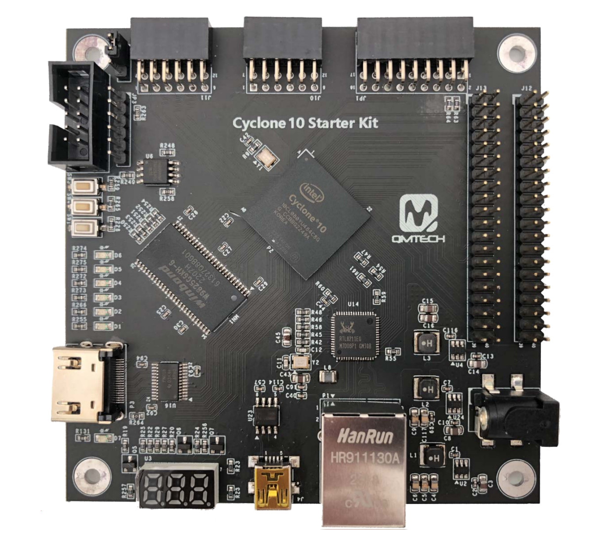

แนะนำการใช้งานบอร์ด QMTECH Cyclone 10 LP Starter Kit#
Keywords: Intel / Altera Cyclone 10 LP, Quartus Prime Lite Edition
▷ บอร์ด Cyclone 10 LP Starter Kit#
บอร์ด Cyclone 10 LP Starter Kit ออกแบบโดยบริษัท QMTECH จากประเทศจีน โดยเวอร์ชันนี้เริ่มวางจำหน่ายในปี ค.ศ. 2019 และมีรายละเอียดเชิงเทคนิค ดังนี้
- FPGA:
10CL016YU484C8G - Clock Input: 50MHz
- On-board Memory:
- QSPI Flash: Winbond W25Q64 (64MBits, 3.3V) for user configuration code
- SDRAM: Winbond W9825G6KH-6 (256Mbits, 16-bit data wide, 3.3V)
- Power Supply / DC-DC Switching Voltage Regulators:
- VIN: 5V (DC Plug)
- MP2315: 3.3V
- NCP1529: 2.5V & 1.2V
- USB-to-Serial Bridge IC: Silicon Labs CP2102N / WCH CH340N
- 1x Mini-USB connector
- 1x JTAG port
- 3x Switches (Push Buttons)
- 3x LEDs
- 3x 7-Segment LEDs
- 1x HDMI Port: TI TPD12S016
- 1x GbE Ethernet Transceiver: Realtek RTL8211EG (GMII Ethernet Interface)
- GitHub:
ChinaQMTECH/CYCLONE_10_STARTER_KIT/
รูป: บอร์ด Cyclone 10 LP Starter Kit (v1.0) (Blue-color PCB, 10CL016YU484C8G)

รูป: บอร์ด Cyclone 10 LP Starter Kit (v3.0) (Black-color PCB, 10CL080YU484C8G)
บอร์ดไม่ได้รวมวงจร USB Blaster ไว้บนบอร์ด ดังนั้นผู้ใช้จะต้องหาอุปกรณ์ USB Blaster มาใช้ร่วมด้วย
รูป: ตัวอย่างการใช้งานบอร์ด FPGA ร่วมกับอุปกรณ์ Low-cost USB Blaster (Clone)
แรงดันไฟเลี้ยงสำหรับการทำงานของบอร์ดได้จาก DC Plug (center-positive, 5V)
แนะนำให้ผู้อ่าน ศึกษารายละเอียดของบอร์ดและวงจรที่เกี่ยวข้องจากไฟล์ Schematic และตัดบางส่วนมานำเสนอในบทความนี้
รูป: ไอซีสัญญาณ CLK 50MHz (3.3V) ไอซี Winbond W25Q64 QSPI Flash (3.3V) และคอนเนกเตอร์ 2x5 JTAG Socket
รูป: ปุ่มกด Switches (active-low, 3.3V) และวงจร LEDs (active-low, 3.3V)
วงจรปุ่มกด SW1 (IO_P4) และ SW4 (IO_P3) เป็น User Switches
มีตัวต้านทานแบบ Pullup ขนาด 4.7k โอห์ม
แต่ปุ่มกด SW3 (nCONFIG) เป็นการรีโหลดข้อมูลบิตสตรีม (Reconfiguration) สำหรับ FPGA
(ข้อมูลได้จาก Serial Flash Configuration Device)
วงจร LED มีตัวต้านทานจำกัดกระแส 1k โอห์ม
ใช้แสดงสถานะลอจิกได้เฉพาะสำหรับขา IO_W17 และ IO_Y17 (เป็น User LEDs)
แต่มีอีกหนึ่ง LED ใช้เฉพาะแสดงสถานะ Power ON (3.3V)
รูป: วงจรสำหรับ 7-Segment Display แบบ 3 ตำแหน่ง
การทำงานของวงจร 7-Segment Display ซึ่งมี 3 ตำแหน่ง อาศัยวงจรทรานซิสเตอร์ NPN BJT (S9014) เป็นตัวควบคุมหรือเปิด-ปิดการไหลของกระแสไฟฟ้าใหักับโมดูล 7-Segment แต่ละตำแหน่ง การต่อใช้งานเป็นแบบ Common-Anode (CA) แต่ละเซกเมนต์มีตัวต้านทานจำกัดกระแส 330 โอห์ม ทั้งสามตำแหน่งแชร์ใช้ข้อมูลอินพุตขนาด 8 บิต ร่วมกัน ดังนั้นจึงต้องมีขาสัญญาณควบคุมแยกกัน 3 สัญญาณ
รูป: ขา I/O สำหรับไอซีหน่วยความจำ Winbond W9825G6KH-6 SDRAM
รูป: คอนเนกเตอร์ Male Pin Headers (2x20 และ 2x9) และคอนเนกเตอร์ 2x6-Pin PMOD (J10 & J11)
รูป: วงจรที่ใช้ไอซี MP2315 แปลงแรงดันไฟฟ้าจาก VIN=5V ให้ได้ 3.3V
รูป: วงจรที่ใช้ไอซี NCP1529 แปลงแรงดันไฟฟ้าจาก 3.3V ให้ได้ 2.5V และ 1.2V
รูป: ไอซี CP2102N USB-to-Serial IC และคอนเนกเตอร์ Mini-USB
รูป: ไอซี TPD12S016 (HDMI Interface Device) และพอร์ต HDMI
รูป: วงจรมีไอซี Realtek RTL8211EG
ข้อสังเกต: บอร์ด FPGA รุ่นนี้ มีวงจรต่อไปนี้
- วงจรสำหรับเชื่อมต่อกับพอร์ต USB โดยใช้ไอซี CP2102 เป็นตัวแปลง USB-to-Serial ดังนั้นจึงสะดวกต่อการใช้งาน ไม่จำเป็นต้องหาอุปกรณ์หรือโมดูลมาต่อเพิ่ม แต่ต้องใช้สาย Mini-USB Cable วงจรดิจิทัลของผู้ใช้จะต้องมีส่วนที่เรียกว่า UART TX/RX Controller ทำหน้าที่รับหรือส่งข้อมูลไปยังคอมพิวเตอร์
- ชิปหน่วยความจำประเภท SDRAM ความจุ 32MB ดังนั้นเหมาะสำหรับการออกแบบวงจรดิจิทัลที่มีการใช้ข้อมูลจำนวนมาก แต่ในการออกแบบวงจรเพื่อใช้งาน จะต้องมีวงจรที่เรียกว่า SDRAM Controller สำหรับการเขียนหรืออ่านข้อมูล
- วงจรสำหรับเชื่อมต่อกับ Ethernet ด้วยพอร์ต RJ45 และมีไอซี Realtek RTL8211EG ทำหน้าที่เป็น Ethernet Transceiver หากต้องการใช้งาน วงจรดิจิทัลของผู้ใช้จะต้องมีส่วนที่เรียกว่า Ethernet MAC Controller
- วงจรสำหรับสร้างสัญญาณเอาต์พุตให้กับพอร์ต HDMI โดยใช้ไอซี TI TPD12S016 และในกรณีนี้ วงจรดิจิทัลของผู้ใช้จะต้องมีส่วนที่เรียกว่า HDMI Controller
บริษัท QMTECH ได้จัดทำตัวอย่างโปรเจกต์สาธิตการใช้งานบอร์ด Cyclone 10 LP Starter Kit ซึ่งสามารถดูได้จาก Github และมีตัวอย่างที่น่าสนใจ เช่น
Test04_SDRAM: สาธิตการเขียนอ่านข้อมูลในหน่วยความจำ SDRAMTest09_project_Ethernet: สาธิตการส่งข้อมูลด้วย EthernetTest13_project_HDMI: สาธิตการสร้างสัญญาณภาพไปยังพอร์ต HDMI
▷ ตัวอย่างโค้ด VHDL เพื่อลองใช้บอร์ด FPGA: Dual-LED Blinking#
ถัดไปเป็นตัวอย่างวงจรดิจิทัลสำหรับนำไปทดลองใช้กับบอร์ด Cyclone 10 LP Starter Kit
เขียนโค้ดด้วยภาษา VHDL
วงจรนี้มีสัญญาณอินพุต CLK (50MHz) และนำไปสร้างสัญญาณควบคุมการนับของวงจรตัวนับ
ด้วยอัตราที่ต่ำ เช่น 10Hz มีการใช้ปุ่มกดสำหรับการรีเซตการทำงานของวงจรด้วยสัญญาณอินพุต NRST
และใช้ LEDs จำนวน 2 ชุด สำหรับแสดงสถานะลอจิกสลับกัน
LIBRARY ieee;
USE ieee.std_logic_1164.ALL;
USE ieee.numeric_std.ALL;
ENTITY qmtech_cyc10_demo IS
PORT (
CLK : IN STD_LOGIC; -- 50 MHz clock input
NRST : IN STD_LOGIC; -- Active-low asynchronous reset
LEDS : OUT STD_LOGIC_VECTOR(1 DOWNTO 0)
);
END qmtech_cyc10_demo;
ARCHITECTURE behavioral OF qmtech_cyc10_demo IS
CONSTANT CLK_DIV : INTEGER := (50e6 / 10) - 1;
SIGNAL clk_div_cnt : INTEGER := 0;
SIGNAL ce : STD_LOGIC := '0';
SIGNAL toggle : STD_LOGIC := '0';
BEGIN
clk_div_proc : PROCESS (CLK, NRST)
BEGIN
IF NRST = '0' THEN
clk_div_cnt <= 0;
ce <= '0';
toggle <= '0';
ELSIF rising_edge(CLK) THEN
IF clk_div_cnt = CLK_DIV THEN
ce <= '1';
clk_div_cnt <= 0;
ELSE
ce <= '0';
clk_div_cnt <= clk_div_cnt + 1;
END IF;
IF ce = '1' THEN
toggle <= NOT toggle;
END IF;
END IF;
END PROCESS;
LEDS <= "11" WHEN NRST = '0' ELSE
toggle & (NOT toggle);
END behavioral;
ไฟล์ Tcl Script สำหรับการเลือกใช้ขา I/O ของชิป FPGA มีดังนี้
# set_global_assignment -name FAMILY "Cyclone 10 LP"
# set_global_assignment -name DEVICE 10CL016YU484C8G
set_location_assignment PIN_G1 -to CLK
set_instance_assignment -name IO_STANDARD "3.3-V LVTTL" -to CLK
# SW1
set_location_assignment PIN_P4 -to NRST
set_instance_assignment -name IO_STANDARD "3.3-V LVTTL" -to NRST
# LEDs
set_location_assignment PIN_Y17 -to LEDS[0]
set_location_assignment PIN_W17 -to LEDS[1]
set_instance_assignment -name IO_STANDARD "3.3-V LVTTL" -to LEDS[0]
set_instance_assignment -name IO_STANDARD "3.3-V LVTTL" -to LEDS[1]
▷ ตัวอย่างโค้ด VHDL: 3-Digit BCD Counter Demo#
อีกตัวอย่างหนึ่งเป็นโค้ด VHDL สำหรับวงจรดิจิทัลที่มีสัญญาณอินพุต CLK (50MHz)
และนำไปสร้างสัญญาณควบคุมการนับของวงจรตัวนับแบบ BCD Counter จำนวน 3 ตำแหน่ง
และมีการใช้ปุ่มกดสำหรับการรีเซตการทำงานของวงจรด้วยสัญญาณอินพุต NRST
ในส่วนของการแสดงผลค่าของตัวเลข 3-Digit BCD Counter จะใช้ 7-Segment Display
บนบอร์ด FPGA และเนื่องจากทั้งสาม 3 ตำแหน่ง แชร์การใช้ขาสัญญาณข้อมูล 8 บิต ร่วมกัน (SEG7[7:0])
จึงต้องใช้วิธี Time-Multiplexing ในการส่งข้อมูลไปยังวงจรสำหรับแต่ละหลัก
และมีขาสัญญาณควบคุม 3 ขา (DIGITS[2:0]) ให้เลือกทีละตำแหน่งและส่งข้อมูลไบต์ใช้กับตำแหน่งดังกล่าว
แล้วเปลี่ยนไปตำแหน่งถัดไปตามลำดับ ทำไปจนครบแล้ววนซ้ำไปเรื่อย ๆ
ดังนั้นสัญญาณควบคุม DIGITS[2:0] จะมีค่าตามลำดับดังนี้ 001 > 010 > 100 > ...
LIBRARY ieee;
USE ieee.std_logic_1164.ALL;
USE ieee.numeric_std.ALL;
ENTITY qmtech_cyc10_7seg_disp IS
GENERIC (
CLK_HZ : NATURAL := 50000000;
NUM_DIGITS : NATURAL := 3
);
PORT (
CLK : IN STD_LOGIC;
NRST : IN STD_LOGIC;
SEG7 : OUT STD_LOGIC_VECTOR(7 DOWNTO 0);
DIGITS : OUT STD_LOGIC_VECTOR(NUM_DIGITS - 1 DOWNTO 0)
);
END qmtech_cyc10_7seg_disp;
ARCHITECTURE behavioral OF qmtech_cyc10_7seg_disp IS
CONSTANT CNT_MAX1 : NATURAL := (CLK_HZ/200) - 1;
CONSTANT CNT_MAX2 : NATURAL := (CLK_HZ/10) - 1;
TYPE bcd_counter_t IS ARRAY(0 TO NUM_DIGITS - 1) OF INTEGER RANGE 0 TO 9;
SIGNAL bcd_count : bcd_counter_t;
SIGNAL data_buf : STD_LOGIC_VECTOR(7 DOWNTO 0);
SIGNAL digits_sel : STD_LOGIC_VECTOR(NUM_DIGITS - 1 DOWNTO 0);
SIGNAL digit_index : NATURAL RANGE 0 TO NUM_DIGITS - 1 := 0;
SUBTYPE nibble IS unsigned(3 DOWNTO 0);
-- This function implements a BCD to 7-Segment decoder.
FUNCTION BCD2SEG7(data : nibble) RETURN STD_LOGIC_VECTOR IS
VARIABLE seg7bits : STD_LOGIC_VECTOR(6 DOWNTO 0);
BEGIN
CASE data IS
WHEN "0000" => seg7bits := "0111111"; -- 0
WHEN "0001" => seg7bits := "0000110"; -- 1
WHEN "0010" => seg7bits := "1011011"; -- 2
WHEN "0011" => seg7bits := "1001111"; -- 3
WHEN "0100" => seg7bits := "1100110"; -- 4
WHEN "0101" => seg7bits := "1101101"; -- 5
WHEN "0110" => seg7bits := "1111101"; -- 6
WHEN "0111" => seg7bits := "0000111"; -- 7
WHEN "1000" => seg7bits := "1111111"; -- 8
WHEN "1001" => seg7bits := "1101111"; -- 9
WHEN OTHERS => seg7bits := "0000000"; -- off
END CASE;
RETURN seg7bits;
END BCD2SEG7;
BEGIN
-- This process implements a N-digit BCD counter.
PROCESS (NRST, CLK)
VARIABLE wait_cnt : NATURAL RANGE 0 TO CNT_MAX2 := 0;
VARIABLE clk_enabled : BOOLEAN;
VARIABLE carry : BOOLEAN;
BEGIN
IF NRST = '0' THEN
wait_cnt := 0;
FOR i IN bcd_count'RANGE LOOP
bcd_count(i) <= 0;
END LOOP;
ELSIF rising_edge(CLK) THEN
IF wait_cnt = CNT_MAX2 THEN
wait_cnt := 0;
clk_enabled := true;
ELSE
wait_cnt := wait_cnt + 1;
clk_enabled := false;
END IF;
IF clk_enabled THEN
carry := true;
FOR i IN 0 TO NUM_DIGITS - 1 LOOP
IF carry THEN
IF bcd_count(i) = 9 THEN
bcd_count(i) <= 0;
carry := true;
ELSE
bcd_count(i) <= bcd_count(i) + 1;
carry := false;
END IF;
ELSE
carry := false;
END IF;
END LOOP;
END IF;
END IF;
END PROCESS;
-- This process implements a 7-segment driver using time-multiplexing.
PROCESS (NRST, CLK)
VARIABLE wait_cnt : NATURAL RANGE 0 TO CNT_MAX1 := 0;
VARIABLE clk_enabled : BOOLEAN;
VARIABLE bcd_value : unsigned(3 DOWNTO 0);
BEGIN
IF NRST = '0' THEN
wait_cnt := 0;
data_buf <= x"00";
digits_sel <= (OTHERS => '0');
digit_index <= 0;
ELSIF rising_edge(CLK) THEN
IF wait_cnt = CNT_MAX1 THEN
wait_cnt := 0;
clk_enabled := true;
ELSE
wait_cnt := wait_cnt + 1;
clk_enabled := false;
END IF;
IF clk_enabled THEN
IF digit_index = NUM_DIGITS - 1 THEN
digit_index <= 0;
ELSE
digit_index <= digit_index + 1;
END IF;
FOR i IN 0 TO NUM_DIGITS - 1 LOOP
IF i = digit_index THEN
digits_sel(i) <= '1';
ELSE
digits_sel(i) <= '0';
END IF;
END LOOP;
bcd_value := to_unsigned(bcd_count(digit_index), 4);
data_buf <= '0' & BCD2SEG7(bcd_value);
END IF;
END IF;
END PROCESS;
DIGITS <= (OTHERS => '0') WHEN NRST = '0' ELSE digits_sel; -- active-high
SEG7 <= NOT data_buf; -- for common-anode 7-segment LEDs
END behavioral;
ไฟล์ Tcl Script สำหรับการตั้งค่าการใช้งานขา I/O มีดังนี้
# set_global_assignment -name FAMILY "Cyclone 10 LP"
# set_global_assignment -name DEVICE 10CL016YU484C8G
# 50MHz clock
set_location_assignment PIN_G1 -to CLK
set_instance_assignment -name IO_STANDARD "3.3-V LVTTL" -to CLK
# SW1 (push button)
set_location_assignment PIN_P4 -to NRST
set_instance_assignment -name IO_STANDARD "3.3-V LVTTL" -to NRST
# 3-digit 7-segment display (common-anode)
set_location_assignment PIN_W19 -to SEG7[7]
set_location_assignment PIN_R20 -to SEG7[6]
set_location_assignment PIN_W20 -to SEG7[5]
set_location_assignment PIN_AA18 -to SEG7[4]
set_location_assignment PIN_AB19 -to SEG7[3]
set_location_assignment PIN_U20 -to SEG7[2]
set_location_assignment PIN_R19 -to SEG7[1]
set_location_assignment PIN_AA19 -to SEG7[0]
set_location_assignment PIN_R18 -to DIGITS[0]
set_location_assignment PIN_U19 -to DIGITS[1]
set_location_assignment PIN_AB18 -to DIGITS[2]
set_instance_assignment -name IO_STANDARD "3.3-V LVTTL" -to SEG7[7]
set_instance_assignment -name IO_STANDARD "3.3-V LVTTL" -to SEG7[6]
set_instance_assignment -name IO_STANDARD "3.3-V LVTTL" -to SEG7[5]
set_instance_assignment -name IO_STANDARD "3.3-V LVTTL" -to SEG7[4]
set_instance_assignment -name IO_STANDARD "3.3-V LVTTL" -to SEG7[3]
set_instance_assignment -name IO_STANDARD "3.3-V LVTTL" -to SEG7[2]
set_instance_assignment -name IO_STANDARD "3.3-V LVTTL" -to SEG7[1]
set_instance_assignment -name IO_STANDARD "3.3-V LVTTL" -to SEG7[0]
set_instance_assignment -name IO_STANDARD "3.3-V LVTTL" -to DIGITS[0]
set_instance_assignment -name IO_STANDARD "3.3-V LVTTL" -to DIGITS[1]
set_instance_assignment -name IO_STANDARD "3.3-V LVTTL" -to DIGITS[2]
▷ ตัวอย่างโค้ด VHDL: UART TX Demo#
ตัวอย่างถัดไปสาธิตการส่งข้อความ Hello World! ทีละตัวอักขระ ASCII
ไปยังคอมพิวเตอร์ของผู้ใช้ โดยใช้วงจรที่เรียกว่า UART-TX (ใช้เฉพาะการส่งข้อมูล แต่ไม่มีการรับข้อมูล)
การส่งข้อมูลด้วย UART จะต้องมีการกำหนดความเร็ว หรือ Baudrate ในตัวอย่างนี้ตั้งค่าไว้เท่ากับ
115200 และการส่งข้อมูลสำหรับ ASCII Character หนึ่งตัว
จะทำทีละบิต โดยการเลื่อนบิตออกไป (Bit Shifting) ทางขาเอาต์พุต TXD
เริ่มต้นด้วย Start Bit (0) ตามด้วยข้อมูลไบต์ (เริ่มด้วยบิต LSB
ตามลำดับไปจนถึงบิต MSB) และจบด้วย Stop Bit (1) และไม่มีการใช้ Parity Bit
การเว้นระยะเวลาในการส่งข้อมูลทีละบิต จะต้องเป็นไปตามค่า Baudrate ที่เลือกใช้
ในตัวอย่างนี้ จะส่งข้อความออกไปหนึ่งครั้ง ก็ต่อเมื่อมีการกดปุ่ม SW4 แล้วปล่อย และใช้ปุ่ม SW1 เป็นปุ่มรีเซตการทำงานของวงจร
LIBRARY ieee;
USE ieee.std_logic_1164.ALL;
USE ieee.numeric_std.ALL;
ENTITY cyc10_uart_tx_demo IS
PORT (
CLK : IN STD_LOGIC; -- 50 MHz clock
NRST : IN STD_LOGIC; -- Active-low reset
BTN : IN STD_LOGIC; -- Active-low user button
RXD : IN STD_LOGIC; -- UART RX pin (not used)
TXD : BUFFER STD_LOGIC; -- UART TX pin
LEDS : OUT STD_LOGIC_VECTOR(1 DOWNTO 0)
);
END cyc10_uart_tx_demo;
ARCHITECTURE behavioral OF cyc10_uart_tx_demo IS
-- Define constants
CONSTANT CLK_FREQ : INTEGER := 50e6; -- 50 MHz clock
CONSTANT BAUD_RATE : INTEGER := 115200; -- 115200 baud rate
CONSTANT BAUD_PERIOD : INTEGER := CLK_FREQ / BAUD_RATE - 2;
-- ASCII message to be transmitted
TYPE ascii_array_t IS ARRAY (0 TO 13) OF STD_LOGIC_VECTOR(7 DOWNTO 0);
CONSTANT MESSAGE : ascii_array_t := (
x"48", -- H
x"65", -- e
x"6C", -- l
x"6C", -- l
x"6F", -- o
x"20", -- (space)
x"57", -- W
x"6F", -- o
x"72", -- r
x"6C", -- l
x"64", -- d
x"21", -- !
x"0D", -- \r
x"0A" -- \n
);
-- FSM states
TYPE state_t IS (ST_IDLE, ST_LOAD_DATA, ST_SEND_DATA, ST_STOP, ST_WAIT);
SIGNAL state : state_t := ST_IDLE;
SIGNAL next_state : state_t := ST_IDLE;
SIGNAL wait_counter : INTEGER := 0;
SIGNAL bit_counter : INTEGER RANGE 0 TO 9 := 0;
SIGNAL char_counter : INTEGER RANGE 0 TO MESSAGE'length := 0;
SIGNAL shift_reg : STD_LOGIC_VECTOR(9 DOWNTO 0) := (OTHERS => '1');
SIGNAL btn_capture : STD_LOGIC_VECTOR(1 DOWNTO 0) := (OTHERS => '1');
BEGIN
LEDS <= TXD & RXD;
PROCESS (CLK, NRST)
BEGIN
IF NRST = '0' THEN
state <= ST_IDLE;
bit_counter <= 0;
wait_counter <= 0;
char_counter <= 0;
btn_capture <= "11";
shift_reg <= (OTHERS => '1');
TXD <= '1'; -- TXD idle (high)
ELSIF rising_edge(CLK) THEN
btn_capture <= btn_capture(0) & BTN;
CASE state IS
WHEN ST_IDLE =>
TXD <= '1';
IF btn_capture = "01" THEN -- button click
state <= ST_LOAD_DATA;
char_counter <= 0;
END IF;
WHEN ST_LOAD_DATA =>
shift_reg <= '1' & MESSAGE(char_counter) & '0';
state <= ST_SEND_DATA;
bit_counter <= 0;
WHEN ST_SEND_DATA =>
TXD <= shift_reg(0); -- LSB bit
shift_reg <= '1' & shift_reg(9 DOWNTO 1); -- Shift data
state <= ST_WAIT;
wait_counter <= BAUD_PERIOD;
IF bit_counter = 9 THEN
next_state <= ST_STOP;
bit_counter <= 0;
ELSE
next_state <= ST_SEND_DATA;
bit_counter <= bit_counter + 1;
END IF;
WHEN ST_STOP =>
TXD <= '1';
IF char_counter = MESSAGE'length - 1 THEN
state <= ST_IDLE;
ELSE
char_counter <= char_counter + 1;
state <= ST_LOAD_DATA;
END IF;
WHEN ST_WAIT =>
IF wait_counter = 0 THEN
state <= next_state;
ELSE
wait_counter <= wait_counter - 1;
END IF;
WHEN OTHERS =>
state <= ST_IDLE;
END CASE;
END IF;
END PROCESS;
END behavioral;
ตัวอย่างไฟล์ Tcl Script สำหรับการเลือกใช้งานขา I/O
# set_global_assignment -name FAMILY "Cyclone 10 LP"
# set_global_assignment -name DEVICE 10CL016YU484C8G
set_location_assignment PIN_G1 -to CLK
set_instance_assignment -name IO_STANDARD "3.3-V LVTTL" -to CLK
# SW1
set_location_assignment PIN_P4 -to NRST
set_instance_assignment -name IO_STANDARD "3.3-V LVTTL" -to NRST
# SW4
set_location_assignment PIN_P3 -to BTN
set_instance_assignment -name IO_STANDARD "3.3-V LVTTL" -to BTN
set_location_assignment PIN_AA22 -to RXD
set_instance_assignment -name IO_STANDARD "3.3-V LVTTL" -to RXD
set_location_assignment PIN_AA21 -to TXD
set_instance_assignment -name IO_STANDARD "3.3-V LVTTL" -to TXD
# LEDs
set_location_assignment PIN_Y17 -to LEDS[0]
set_location_assignment PIN_W17 -to LEDS[1]
set_instance_assignment -name IO_STANDARD "3.3-V LVTTL" -to LEDS[0]
set_instance_assignment -name IO_STANDARD "3.3-V LVTTL" -to LEDS[1]
รูป: ตัวอย่างการรับข้อความจากบอร์ด FPGA โดยใช้ซอฟต์แวร์ Arduino IDE - Serial Monitor
ผู้ใช้สามารถเพิ่มวงจร Signal Tap Logic Analyzer
ซึ่งเป็นวงจรดิจิทัลที่ช่วยในการบันทึกและวิเคราะห์สัญญาณภายในวงจร
FPGA มีการตั้งค่าการใช้งานดังนี้ เลือกใช้สัญญาณ CLK สำหรับการทำงานของวงจร
การตั้งค่าเงื่อนไขทริกเกอร์ ได้เลือกเป็นการเกิดขอบขาขึ้นของสัญญาณที่ขาอินพุต BTN จากวงจรปุ่มกดบนบอร์ด
สัญญาณที่เลือกมาบันทึกและวิเคราะห์ คือ สัญญาณ BTN และสัญญาณ TXD
รูป: ตัวอย่างการตั้งค่าการใช้งาน Signal Tap Logic Analyzer
รูป: ตัวอย่างข้อมูลที่บันทึกได้และแสดงผลในรูปคลื่นสัญญาณดิจิทัล
ตัวอย่าง VHDL Testbench สำหรับการจำลองการทำงานด้วยซอฟต์แวร์ Questa Simulator (Intel Starter FPGA Edition) v2021.2
LIBRARY ieee;
USE ieee.std_logic_1164.ALL;
USE ieee.numeric_std.ALL;
ENTITY cyc10_uart_tx_demo_tb IS
END cyc10_uart_tx_demo_tb;
ARCHITECTURE testbench OF cyc10_uart_tx_demo_tb IS
-- Testbench signals
SIGNAL clk : STD_LOGIC := '0';
SIGNAL nrst : STD_LOGIC := '0'; -- Active-low reset
SIGNAL btn : STD_LOGIC := '1'; -- Active-low button (starts high)
SIGNAL rxd : STD_LOGIC := '1'; -- RXD not used
SIGNAL txd : STD_LOGIC;
SIGNAL leds : STD_LOGIC_VECTOR(1 DOWNTO 0);
-- Clock period (50 MHz clock, 20 ns period)
CONSTANT CLK_PERIOD : TIME := 20 ns;
-- Component under test (DUT)
COMPONENT cyc10_uart_tx_demo
PORT (
CLK : IN STD_LOGIC;
NRST : IN STD_LOGIC;
BTN : IN STD_LOGIC;
RXD : IN STD_LOGIC;
TXD : BUFFER STD_LOGIC;
LEDS : OUT STD_LOGIC_VECTOR(1 DOWNTO 0)
);
END COMPONENT;
BEGIN
-- Instantiate the design under test (DUT)
uut : cyc10_uart_tx_demo
PORT MAP(
CLK => clk, NRST => nrst, BTN => btn,
RXD => rxd, TXD => txd, LEDS => leds);
clk_proc : PROCESS -- Clock generation process
BEGIN
clk <= '0';
WAIT FOR CLK_PERIOD / 2;
clk <= '1';
WAIT FOR CLK_PERIOD / 2;
END PROCESS;
stim_proc : PROCESS -- Stimulus process
BEGIN
-- Reset the system
nrst <= '0';
WAIT FOR 50 ns; -- Hold reset low for some time
nrst <= '1';
WAIT FOR 100 ns; -- Wait for some time after reset
-- Simulate button press (active-low)
btn <= '0'; -- Button pressed
WAIT FOR 1 us;
btn <= '1'; -- Button released
-- Wait for some time to observe UART transmission
WAIT FOR 1 ms;
WAIT;
END PROCESS;
END testbench;
ไฟล์ sim.do ซึ่งเป็นตัวอย่างโค้ด Tcl Script สำหรับการรันคำสั่งเพื่อการจำลองการทำงาน
transcript on
# Delete the 'rtl_work' if it exists.
if {[file exists rtl_work]} {
vdel -lib rtl_work -all
}
# Create 'rtl_work' library and use it as the 'work' library.
vlib rtl_work
vmap work rtl_work
# Compile VHDL code
vcom -2008 -work work {./cyc10_uart_tx_demo/cyc10_uart_tx_demo.vhd}
vcom -2008 -work work {./cyc10_uart_tx_demo/cyc10_uart_tx_demo_tb.vhd}
# Load the VHDL testbench
vsim -voptargs="+acc" work.cyc10_uart_tx_demo_tb(testbench)
# Add all I/O signals to the waveform
add wave /cyc10_uart_tx_demo_tb/*
# Run the simulation for 1msec
run 1ms
รูป: ผลการจำลองการทำงานและแสดงรูปคลื่นสัญญาณดิจิทัล
จากผลการจำลองการทำงาน จะเห็นได้ว่า ความกว้างของหนึ่งบิตเท่ากับ 8680 ns หรือ คิดเป็นค่า Baudrate เท่ากับ (1e9 /8680) หรือ 115207.37
▷ กล่าวสรุป#
บทความนี้ได้นำเสนอข้อมูลเชิงเทคนิคเกี่ยวกับบอร์ด QMTECH Cyclone 10 LP Starter Kit ซึ่งมีชิป Intel / Altera Cyclone 10 LP และถือว่าเป็นบอร์ดที่มีราคาไม่แพง แม้ว่าจะไม่ใช่บอร์ดรุ่นใหม่ แต่ก็เป็นอีกหนึ่งตัวเลือกสำหรับผู้ที่สนใจทดลองเรียนรู้ FPGA
ในบทความมีการนำเสนอตัวอย่างโค้ด VHDL สำหรับวงจรดิจิทัลที่นำไปทดลองใช้กับซอฟต์แวร์ Quartus Prime Lite Edition และบอร์ด FPGA
This work is licensed under a Creative Commons Attribution-ShareAlike 4.0 International License.
Created: 2024-10-22 | Last Updated: 2024-10-27